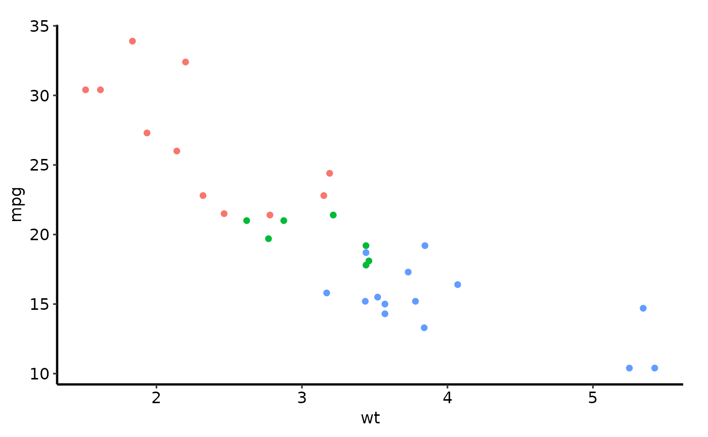
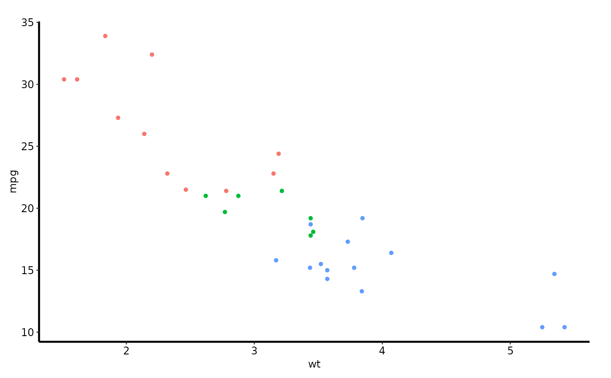

A clean, white-background theme suited to journal submissions. Removes grid lines, panel borders, and legends; draws solid axis lines.
Usage
hv_theme_manuscript(
base_size = 12,
base_family = "",
header_family = NULL,
base_line_size = base_size/22,
base_rect_size = base_size/22,
ink = "black",
paper = "white",
accent = "#3366FF"
)
theme_manuscript(
base_size = 12,
base_family = "",
header_family = NULL,
base_line_size = base_size/22,
base_rect_size = base_size/22,
ink = "black",
paper = "white",
accent = "#3366FF"
)
theme_man(
base_size = 12,
base_family = "",
header_family = NULL,
base_line_size = base_size/22,
base_rect_size = base_size/22,
ink = "black",
paper = "white",
accent = "#3366FF"
)Arguments
- base_size
Base font size in points. Default
12.- base_family
Base font family. Default
""(device default).- header_family
Font family for headers, or
NULLto inheritbase_family. DefaultNULL.- base_line_size
Line size used for axis lines and borders. Default
base_size / 22.- base_rect_size
Rectangle border size. Default
base_size / 22.- ink
Foreground (text and line) colour. Default
"black".- paper
Background colour. Default
"white".- accent
Accent colour used by some
theme_grey()elements. Default"#3366FF".
Value
A ggplot2::theme() object.
Note
Deprecated. Use hv_theme() with style = "manuscript" instead.
Examples
library(ggplot2)
p <- ggplot(mtcars, aes(wt, mpg, colour = factor(cyl))) + geom_point()
# Default manuscript theme
p + hv_theme_manuscript()

# Smaller base font for two-column journal layout
p + hv_theme_manuscript(base_size = 9)

# Via the generic dispatcher
p + hv_theme("manuscript")